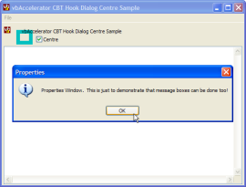

VB5 Dialog Centre Sample (30K)
VB5 Dialog Centre Sample (30K)
 VB6 Dialog Centre Sample (29K)
VB6 Dialog Centre Sample (29K)
 27 Jun 2003
27 Jun 2003
First Posted
 Win32 Hooks in VB - The vbAccelerator Hook Library
Win32 Hooks in VB - The vbAccelerator Hook Library
 Subclassing Without The Crashes
Subclassing Without The Crashes
 (Incomplete) Docking Forms In VB
(Incomplete) Docking Forms In VB

Using CBT Hooks to Centre API Dialogs
Ensure Common Dialogs and Message Boxes appear where you want them to.
Windows sometimes places Common Dialogs and Message Boxes at the "wrong" position on the screen. Whilst there are some ways of working around this for Common Dialogs, a more general solution which applies to any Windows dialog is to use a CBT (Computer-Based Training) Windows Hook. These Hooks provide notification when any Window in your process is created, activated, focused, moved or destroyed.
Using a WH_CBT Hook
WH_CBT hooks are intended primarily for Computer-Based Training applications, but provide a significant amount of power in intercepting and modifying the way Windows works. Once you install a WH_CBT hook, you will start receiving these hook notifications for every window within the process you've installed the hook in:
- HCBT_CREATEWND = 3
A window is about to be created. The system calls the hook procedure before sending the WM_CREATE or WM_NCCREATE message to the window. Whilst the window has been created, at this point its size may not have been set, nor the parent window. If the hook procedure returns a nonzero value, the system destroys the window.
- The wParam member of the hook notification contains the handle of the new window.
- The lParam member contains a pointer to a CBT_CREATEWND structure allowing you to modify the initial size and position of the window.
- HCBT_DESTROYWND = 4
A window is about to be destroyed. Return 1 to prevent this from occurring.
- The wParam member of the hook notification contains the handle of the window about to be destroyed.
- The lParam value is undefined and must be ignored.
- HCBT_MOVESIZE = 0
A window is about to be moved or sized. Return 1 to prevent the window position from being changed.
- The wParam member of the hook notification contains the handle of the window being moved or sized.
- The lParam member contains a pointer to a RECT containing the coordinates of the window. This can be modified to set the window's ultimate position and size.
- HCBT_MINMAX = 1
A window is about to be minimized or maximized. Return 1 to prevent the window position from being changed.
- The wParam member of the hook notification contains the handle of the window being minimized or maximized.
- The low-word of the lParam member contains the show-window (SW_* constant) specifying the operation to be performed.
- HCBT_ACTIVATE = 5
The system is about to activate a window. Return 1 to prevent the window from being activated.
- The wParam member of the hook notification contains the handle of the window being activate.
- The lParam member contains a pointer to a CBTACTIVATESTRUCT structure containing details about the activation operation.
- HCBT_SETFOCUS = 9
A window is about to receive the keyboard focus. Return 1 to prevent the window from recieving focus.
- The wParam member of the hook notification contains the handle of the window about to receive focus.
- The lParam member contains the handle of the window about to lose focus.
- HCBT_SYSCOMMAND = 8
A system command is about to be carried out. Return 1 to prevent the System Command from begin performed.
- The wParam member of the hook notification contains the system command code (SC_*) about to be performed.
- The lParam member contains lParam which will be send along with this WM_SYSCOMMAND message.
As you can see, you can use the hook to detect any window that is created or destroyed as well as to substantively alter how the user interface works. In the case of centring dialogs, however, we only need to detect when the dialog is created.
Note there are also three other HCBT_ codes associated with CBT applications which aren't covered here; these are only used in conjunction with a WH_JOURNALPLAYBACK hook.
Centring Common Dialogs and Message Boxes
To centre a Common Dialog or Message Box, you need to be able to do two things:
- Detect the Window handle of the dialog as it is created.
- Intercept the WM_INITDIALOG message as it is sent by the dialog.
In this sample the vbAccelerator Windows Hook library is used to detect the dialog handle as it is created, and the Subclassing and Timer Assistant to subclass the dialog and intercept the WM_INITDIALOG message.
1. Using the WH_CBT hook
The previous section described the many notifications supplied by this hook. In this case detection of the dialog being created is needed; however, the hook will also provide all sorts of other notifications, including those for every child control within the dialog and activation/sizing of any controls on the dialog or your application. Therefore you want to filter the messages you receive to get the correct one. Also, for best performance the hook should be installed for as short a time as possible.
This is achieved in the demonstration by:
- Only installing the hook just before the dialog is about to be shown.
- Checking only hook notifications with code HCBT_CREATEWND.
- Only responding to events for Windows with the class name "#32770" (which of course is exactly the class name any reasonable person would give to a dialog if they were asked to choose a name for one).
The code looks like this:
Private Function IWindowsHook_HookProc( _
ByVal eType As vbalWinHook.EHTHookTypeConstants, _
ByVal nCode As Long, _
ByVal wParam As Long, _
ByVal lParam As Long, _
bConsume As Boolean) As Long
If eType = WH_CBT Then
If nCode = HCBT_CREATEWND Then
InstallWinProc wParam
End If
End If
End Function
Private Function InstallWinProc(ByVal hwnd As Long)
Dim lProcOld As Long
Dim sClass As String
Dim iPos As Long
If IsValidLocalWindow(hwnd) Then
If (InStr(ClassName(hwnd), "#32770")) Then
AttachMessage Me, hwnd, WM_INITDIALOG
End If
End If
End Function
Private Function IsValidLocalWindow(ByVal hwnd As Long) As Boolean
If IsWindow(hwnd) Then
Dim idWnd As Long
Call GetWindowThreadProcessId(hwnd, idWnd)
IsValidLocalWindow = (idWnd = GetCurrentProcessId())
End If
End Function
Private Property Get ClassName(ByVal hwnd As Long) As String
Dim sBuf As String
Dim iPos As Long
sBuf = String$(255, 0)
GetClassName hwnd, sBuf, 255
iPos = InStr(sBuf, Chr$(0))
If iPos > 1 Then
ClassName = Left$(sBuf, iPos - 1)
End If
End Property
Responding to the WM_INITDIALOG message
Once the window has been found and the subclass installed, its just a matter of waiting for it to finish initialising and then send the WM_INITDIALOG message. When this message is sent, the dialog has been completely set up and sized, so the code can determine the dialog size, centre it, and then remove the subclass and hook. The code in the demonstration will check for multiple monitors on your system whilst centring and attempt to place the dialog at the best position. In more recent versions of Windows File and Folder selection dialogs are resizable which means you can also specify the ideal width and height you'd like for the dialog.
Conclusion
Using a WH_CBT hook, you can easily intercept the creation and destruction of any Window and obtain a handle to it even if that Window is not being created directly from your code (which of course is usually the case for VB applications.) Hooks of this type are particularly useful for modifying the behaviour of Windows which possibly weren't intended to be modified, particularly the Windows API dialogs.